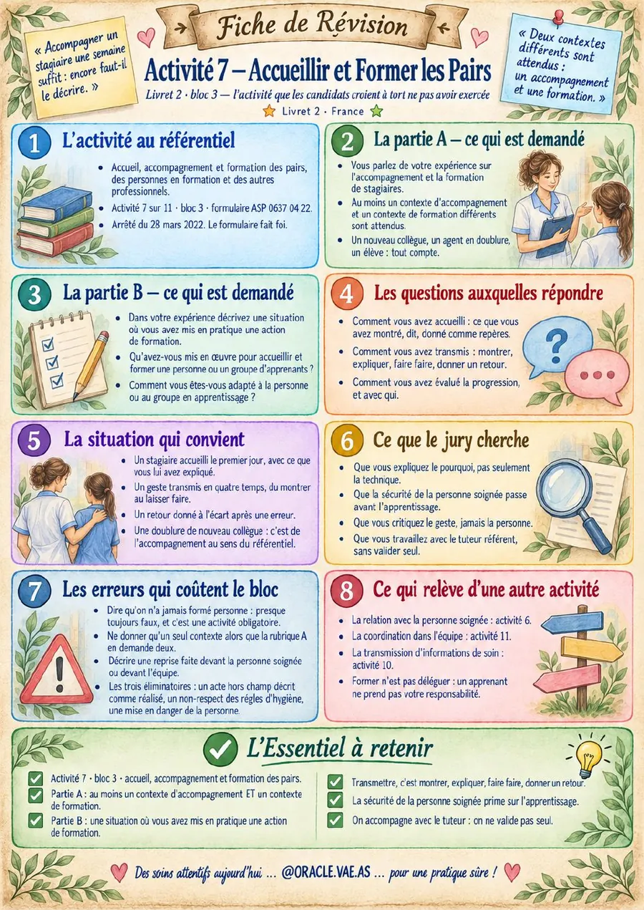

Activité 7 — Informer et formerBloc 3 · récit 2 · encadrer stagiaires et pairs
Accueillir, encadrer, évaluer : vous êtes aussi formateur de terrain.
Objectifs & cadreCe que vous saurez à l'issue de cette masterclass
Décoder la fiche
Les 8 sections de la fiche ORACLE Activité 7 point par point.
Rédiger la bonne situation
Choisir le résident, le contexte, l'adaptation. Éviter les erreurs qui coûtent le Bloc 3.
Préparer l'oral
Les 3 piliers appliqués à cette activité. Les phrases qui portent face au jury.
L'activité au référentiel
La fiche ORACLE Activité 7 décomposée en 8 sections — tout ce qu'il faut savoir sur cette activité.
La fiche ORACLE Activité 7Cliquez sur chaque pastille dorée pour explorer

Fiche de révision ORACLE
Cette fiche condense les 8 points cruciaux de l'activité. Explorez chaque section pour comprendre les attentes du jury.
Explorez les 8 hotspots puis cochez les points clés plus loin. Le quiz final valide votre maîtrise.
Les 3 piliers du raisonnement cliniqueCe que le jury cherche derrière chaque geste
POURQUOI ?
Relier l'acte à l'état clinique, au PAP, à un signe d'alerte. Le geste n'est jamais une routine : il répond à un besoin identifié.
COMMENT ?
L'adaptation est la preuve de votre expertise. Même geste réalisé différemment selon résident, contexte, habitudes.
ET APRÈS ?
Le rôle AS ne s'arrête pas au geste. Observation, DAR, alerte, ajustement PAP sont le prolongement obligatoire.
Rédiger la bonne situation
Testez vos réflexes sur 12 situations de rédaction concrètes.
12 situations à cadrerTestez-vous — chaque réponse est argumentée
Préparer l'oral
Ancrage mémoire avec points clés et flashcards.
Les 15 points clés à retenirCochez chaque point que vous maîtrisez
L'activité 7 appartient au Bloc 3
Je connais le libellé exact de l'activité 7 au référentiel 2022
Je sais ce qu'est demandé en Rubrique A (relevé d'exemples)
Je sais ce qu'est demandé en Rubrique B (situation analysée)
Je choisis UNE situation, datée, située
Je rédige la présentation exhaustive du résident
Je montre une adaptation visible pour ce résident
J'applique les 3 piliers : POURQUOI, COMMENT, ET APRÈS
Je ne décris aucun acte hors champ comme réalisé
Je respecte les protocoles d'hygiène
Je ne confonds pas cette activité avec les activités voisines
J'écris JE, jamais 'on' ou 'nous'
Je transmets en DAR ce que j'ai observé
Je me prépare à défendre à l'oral ce que j'ai écrit
Je sais que le bloc se valide en entier, pas par moyenne
Mémorisation
Flashcards pour ancrer les points durables en mémoire longue.
10 flashcards à mémoriserCliquez sur la carte pour retourner
Évaluation
Quiz final de 15 questions pour valider votre maîtrise de cette masterclass.
Quiz final — 15 questionsValidez vos acquis sur l'ensemble de MC10
Masterclass 10 terminéeActivité 7 — Informer et former
Vous savez maintenant comment aborder l'Activité 7. Appliquez la méthode à votre récit, puis passez à l'activité suivante.